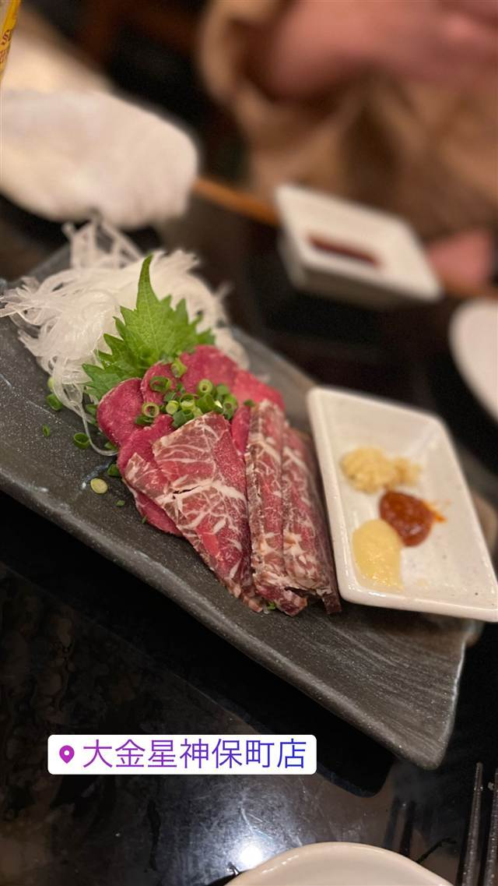

大金星 神保町店
決まった時間にだけ現れる名物・夜泣き焼きそば
大金星神保町店
神保町にある大衆居酒屋。もつ焼きや鉄板料理を中心に、時間限定で提供される名物「夜泣き焼きそば」が人気を集めている。
TRIVIA
豆知識
- 名物「夜泣き焼きそば」は決まった時間にしか出てこない
REVIEWS
世間の評判
3.11食べログ
名物の鉄板夜鳴き焼そばと活気
- 名物の鉄板夜鳴き焼そばのもちもちした食感を評価する声が非常に多い
- 唐揚げや餃子などボリュームある料理でコスパが良いという声が多い
- ジョッキが大きくビールなど酒の値段が手頃だという声が非常に多い
- 2階は喫煙席で煙が気になり混雑時は席がかなり窮屈という声もある
食べログ 口コミ128件
| 看板 | 夜泣き焼きそば、炭火焼きのもつ串 |
|---|---|
| こだわり | もつは朝挽き、串は一本ずつ丁寧に炭火で焼き上げる。名物「夜泣き焼きそば」は18:30・19:30・20:30・21:30・22:30と時間を決めて提供 |
| どこから | 都心 |
| 行くなら | 夜だけ |
| 営業時間 | 月〜土 17:00-03:00 日 16:00-23:00 |
| 予算 | 夜 ¥2,000～¥2,999 |
| 定休日 | 無休 |
| 場所 | 神保町駅 東京都千代田区神田神保町1-14-12 |
| メモ | 17:00〜27:00、年中無休 |
食べたもの：馬刺し
NEARBY
近い店・同じ系統の店
-
 ★
二郎系(直系) 神保町
ラーメン二郎 神田神保町店
三田本店直系の乳化系濃厚豚骨醤油が自慢の二郎ラーメン
昼 ¥1,000～¥1,999
★
二郎系(直系) 神保町
ラーメン二郎 神田神保町店
三田本店直系の乳化系濃厚豚骨醤油が自慢の二郎ラーメン
昼 ¥1,000～¥1,999
-
 ★
つけ麺 神保町駅
つけそば 神田勝本
銀座の一つ星フレンチシェフが手がける清湯つけそば
昼 ～¥999
★
つけ麺 神保町駅
つけそば 神田勝本
銀座の一つ星フレンチシェフが手がける清湯つけそば
昼 ～¥999
-
 欧風カレー 神保町駅
ガヴィアル
継ぎ足す秘伝ソースに28種のスパイス、百名店の欧風カレー
昼 ¥1,000～¥1,999 夜 ¥1,000～¥1,999
欧風カレー 神保町駅
ガヴィアル
継ぎ足す秘伝ソースに28種のスパイス、百名店の欧風カレー
昼 ¥1,000～¥1,999 夜 ¥1,000～¥1,999
-
 カレー 神保町駅
スマトラカレー 共栄堂
1924年創業、小麦粉不使用で元祖スマトラカレーを今に伝える店
昼 ¥1,000～¥1,999 夜 ¥1,000～¥1,999
カレー 神保町駅
スマトラカレー 共栄堂
1924年創業、小麦粉不使用で元祖スマトラカレーを今に伝える店
昼 ¥1,000～¥1,999 夜 ¥1,000～¥1,999
-
 ベーカリー 神保町駅
東京メロンパン 神保町靖国通り店
靖国通り沿いで実演販売する焼きたてメロンパン
昼 ～¥999 夜 ～¥999
ベーカリー 神保町駅
東京メロンパン 神保町靖国通り店
靖国通り沿いで実演販売する焼きたてメロンパン
昼 ～¥999 夜 ～¥999
-
 海老 神保町駅
海老丸らーめん
フレンチ出身シェフがラーメン修行なしでオマール海老ビスクを組み立てた店
昼 ¥2,000～¥2,999 夜 ¥2,000～¥2,999
海老 神保町駅
海老丸らーめん
フレンチ出身シェフがラーメン修行なしでオマール海老ビスクを組み立てた店
昼 ¥2,000～¥2,999 夜 ¥2,000～¥2,999
ONSEN & SAUNA